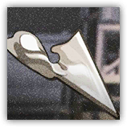
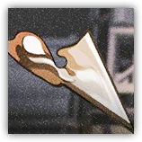

Dor-1号失败品 Dor-1 Failure
近战 物理；普通 构装 递质
|  |
多萝西实验失败的产物。一团形状不规则的银色物体，散发着柔和的光芒，仿佛一个沉睡着的梦境。 |
Dor-1号失败品丨Dor-1 Failure
微型构装（递质），无阵营
AC 11
先攻 +2（12）
HP 5（2d4）
速度 20尺，40尺飞行（悬浮）
| 调整 | 豁免 | ||
|---|---|---|---|
| 力量 | 8 | -1 | -1 |
| 智力 | 3 | -3 | -3 |
| 调整 | 豁免 | ||
|---|---|---|---|
| 敏捷 | 13 | +1 | +3 |
| 感知 | 16 | +3 | +5 |
| 调整 | 豁免 | ||
|---|---|---|---|
| 体质 | 10 | +0 | +0 |
| 魅力 | 7 | -2 | -2 |
免疫 毒素；目盲，耳聋，力竭，麻痹，石化，中毒
感官 震颤感知30尺，被动察觉13
语言 无
CR 1/8（XP 25；PB +2）
特质 Traits
魔法抗性 Magic Resistence。多萝西实验体为抵抗法术和其它魔法效应而作的豁免检定具有优势。
解体 Disintergration。若实验体死亡，其解体为尘埃，留下其着装或携带的任何东西。
神经激活 Neural Activation。多萝西实验体在一个充能未满的R系列动力装甲5尺内开始或结束回合时，解散自己，并为目标灌注1发充能。如果成功激活动力装甲，目标立即以实验体的先攻继续回合。
动作 Actions
解构 Deconstruction。近战攻击检定：+5，触及5尺。命中：5（1d4+3）点穿刺伤害。
Dor-α号失败品丨Dor-α Failure
近战 物理；普通 构装 递质
|  |
多萝西实验失败的产物。一团形状不规则的银色物体，散发着柔和的光芒，但它不常见的外表仍旧让人下意识地惧怕，想要远离。 |
Dor-α号失败品丨Dor-α Failure
微型构装（递质），无阵营
AC 12
先攻 +2（12）
HP 14（4d4+4）
速度 20尺，40尺飞行（悬浮）
| 调整 | 豁免 | ||
|---|---|---|---|
| 力量 | 13 | +1 | +1 |
| 智力 | 3 | -3 | -3 |
| 调整 | 豁免 | ||
|---|---|---|---|
| 敏捷 | 14 | +2 | +4 |
| 感知 | 16 | +3 | +5 |
| 调整 | 豁免 | ||
|---|---|---|---|
| 体质 | 12 | +1 | +1 |
| 魅力 | 7 | -2 | -2 |
免疫 毒素；目盲，耳聋，力竭，麻痹，石化，中毒
感官 震颤感知30尺，被动察觉13
语言 无
CR 1/4（XP 50；PB +2）
特质 Traits
魔法抗性 Magic Resistence。多萝西实验体为抵抗法术和其它魔法效应而作的豁免检定具有优势。
解体 Disintergration。若实验体死亡，其解体为尘埃，留下其着装或携带的任何东西。
神经激活 Neural Activation。多萝西实验体在一个充能未满的R系列动力装甲5尺内开始或结束回合时，解散自己，并为目标灌注1发充能。如果成功激活动力装甲，目标立即以实验体的先攻继续回合。
动作 Actions
解构 Deconstruction。近战攻击检定：+5，触及5尺。命中：8（2d4+3）点穿刺伤害。